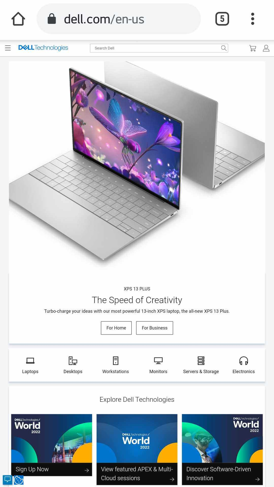
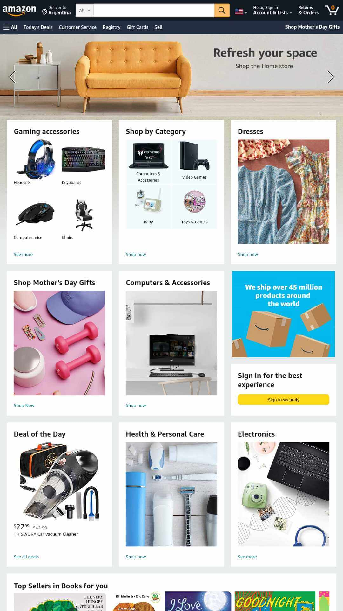
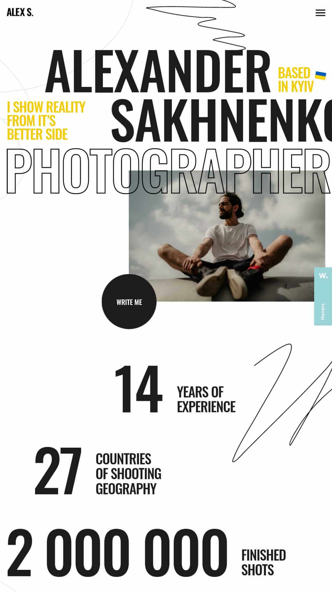

Visual Hierarchy
Dell Technologies Inc.
The principle of visual hierarchy is exemplified on this website by Dell posting at the top of the web page a large image of one of the newest products they are selling. Next, we can see the rest of its products in a smaller size. Also, if we browse through their menu, we find the most important of their products at the top of the list.
Repetition
Amazon.com, Inc.
The principle of repetition is exemplified on this website by Amazon because, like with many sales websites, they organize their products on grids with similar characteristics like size, font types, and HTML elements for displaying and describing them. They usually repeat that pattern for visualizing different categories and also in the process of market transactions.
White Space
Alexander Sakhnenko
The principle of white space and clean design is exemplified on this website from the beginning because they combine a lot of white space in all the sections. They also combine different alignments for the images or text but achieve an excellent result in asymmetric integrations.